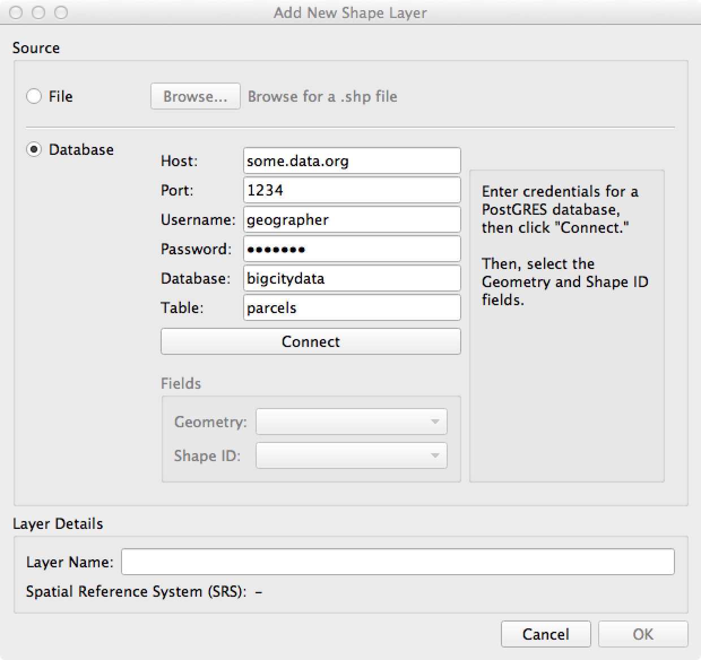

Adding Shapes¶
All shapes in GeoCanvas are organized into layers. To add new shapes, you add a new layer.
- From the File menu, select New Shape Layer…
The “Add New Shape Layer” dialog box will appear.
Here you can choose the source of the shapes. You have two main options, whether to load shapes from a file, or from a database. You’ll have a different set of options depending on that choice.
From File¶
To load shapes from a file, select “File” on the left. Currently, GeoCanvas supports loading from files in “shapefile” format, which have a ”.shp” extension.

- Click on the “Browse..” button, select a file from the dialog that appears, then click OK.
- You can then either keep the layer name that GeoCanvas suggests, which is just the name of the file, minus the .shp extension, or you can enter any name of your choosing in the “Layer Name” field at the bottom of the dialog.
- Click “OK”
- The layer will be added to the layer panel, with the name you gave it.
- Shapes will start to appear in the 3D view, if you are zoomed in close enough. If it’s a large file, you’ll see the progress of the shape loading as progress bar underneath the layer name.
- If you don’t see the shapes you loaded, check to be sure the layer is turned on, and check the Visibility Limit control to be sure you’re within the layer’s visibility limits. You may need to pan around or zoom in to see the shapes. See the Layer Controls section for more info.
From Database¶
To load shapes from a database table, select “Database” on the left.
{kind=link}
- Enter the Host, Port, Username, Password, Database, and Table for the database to which you’d like to connect, then click “Connect.”
- GeoCanvas supports connecting to PostGIS databases, and for adding shapes, requires connecting to a table that has geometric data.
- Once a successful connection has been made, you’ll need to select which field in the table contains the Geometry (i.e. the shapes), and which field contains the unique shape ID’s.
- Then, follow steps 2-6 above under “From File”